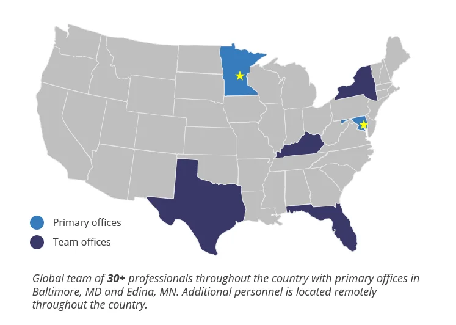

NORTH BRANCH CAPITAL
STOCADVISORY
Transaction Advisory | Corporate Development | Growth Enablement
Infinity Home Services, Summit Hydraulics, Diversified Fall Protection, and STARC Systems operate in distribution, manufacturing, and industrial services. We've completed over 200 transactions in these sectors and understand how technical sales, supply chains, and field operations work in these businesses.
WHY THIS MATTERS FOR YOUR PORTFOLIO
What You're Actually Dealing With
You're running Infinity Home Services across multiple states, trying to find HVAC add-ons that fit the footprint. You bought Summit Hydraulics and need more regional hydraulic distributors. Diversified Fall Protection has technical expertise that's hard to replicate, so finding add-ons means understanding fall protection economics, not just "safety equipment." Each platform needs different targets, different diligence focus, and you can't afford to get surprised post-close.
What Goes Wrong With Generic Advisors
They flag 65% customer concentration as a risk without knowing that technical hydraulics distributors serving 3 to 4 major industrial clients is normal. They don't understand that recurring fall protection inspection revenue should be analyzed separately from equipment sales. They can't tell you if management's claims about backlog quality are reasonable for custom manufacturing. Post-close, they disappear. No help with integration, no KPI tracking, no operational support when the portfolio company needs it.
Why PE Funds Keep Coming Back to Us
We've done 200+ deals in industrial sectors. We know that 60% gross margins in technical distribution means they're value-add, not just order-takers. We understand when working capital spikes are seasonal versus structural problems. We can tell you whether a fall protection company's safety training revenue is actually sticky or just riding a compliance wave. And we're there post-close, helping integrate acquisitions, tracking KPIs that matter for field service or manufacturing operations, not disappearing after you wire the money.

Global team of 30+ professionals with primary offices in Baltimore, MD and Edina, MN.
SECTOR EXPERTISE IN YOUR PORTFOLIO COMPANIES
Distribution & Supply Chain
We've completed diligence on distributors serving HVAC, plumbing, industrial MRO, and specialty equipment markets. We understand the economics of branch networks, technical sales, vendor relationships, and working capital dynamics in distribution businesses.
Manufacturing & Engineering Services
Experience with custom fabrication, engineered-to-order products, and technical manufacturing. We can assess production capacity, margin drivers in custom work, and the transition from project-based to recurring revenue models.
Industrial Services & Safety
Background in compliance-driven industrial services, safety equipment, and technical installation. We understand recurring inspection revenue, certification requirements, and the difference between equipment sales and service contracts.
Field Service Operations
We've worked with businesses that dispatch technicians, manage parts inventory in trucks, and coordinate installations across multiple locations. We know the KPIs that matter: technician utilization, first-time fix rates, and parts-to-labor ratios.
CORPORATE DEVELOPMENT, DILIGENCE, AND POST-CLOSE SUPPORT
01
Target Identification Before Broker Marketing
By the time an HVAC distributor or regional hydraulics company hits the broker market, you're competing against 8 other bidders and paying a higher multiple.
We build proprietary target lists from trade associations, supplier networks, and public filings. For Summit Hydraulics, that means finding regional hydraulics distributors in adjacent markets before they're formally shopped. You get 6 to 12 months of runway to build relationships before competition shows up.
02
Sector-Specific Financial Diligence
Generic QoE providers flag things that don't matter and miss things that do. They don't know if customer concentration is normal, whether margins make sense, or if working capital swings are seasonal.
Our team has completed 200+ deals in distribution, manufacturing, and industrial services. We know what 38% gross margins mean for HVAC distribution versus fall protection equipment. We can tell you whether recurring inspection revenue is defensible or just riding a compliance cycle. We identify what's actually risky versus what's normal for the sector.
03
Integration and Operational Support
You close the deal and your advisors vanish. You're left figuring out integration, KPI tracking, and operational improvements on your own or hiring expensive consultants who don't know the business.
We stay engaged. Integration planning for add-ons, KPI dashboards that track metrics that matter (not generic ones), operational support from people who've run distribution branches and managed field service teams. We're there when you need to understand why technician productivity dropped or whether the new acquisition's inventory levels are reasonable.